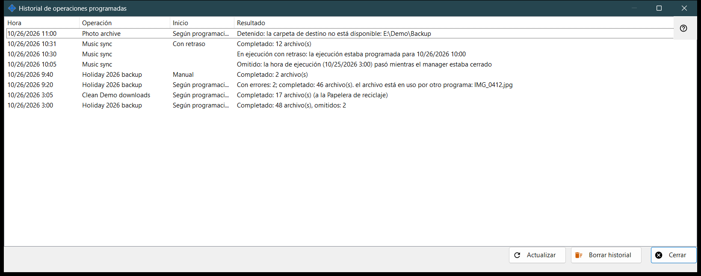
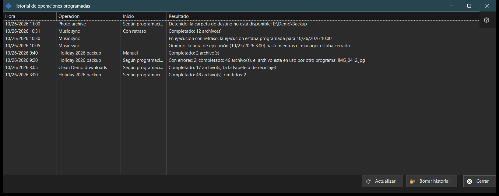

Historial de operaciones programadas
Para qué sirve
Muestra las ejecuciones y notas recientes de las operaciones de archivos programadas, tal como constan en el diario. Se abre desde «Historial..» en la página «Operaciones de archivos programadas» de los ajustes de Share Manager.


En este orden
- Lee la lista: Hora, Operación, Inicio y Resultado.
- Ensancha la ventana si un resultado es largo.
- Pulsa «Actualizar» para releer el diario.
- Pulsa «Borrar historial» y confirma para vaciarlo.
- Pulsa «Cerrar».
Los elementos
Columnas
Hora, Operación (su nombre), Inicio y Resultado. Inicio es Según programación, Manual, Ejecutar todas o Con retraso, y queda vacío en una nota. La ventana lee las últimas 200 entradas del diario al abrirse y con «Actualizar»; no se actualiza sola.
Resultados de una ejecución
«Completado: N archivo(s)», con «, omitidos: M» cuando se dejaron algunos fuera y «(a la Papelera de reciclaje)» para las eliminaciones. «Con errores: N; completado: M archivo(s)» seguido de la primera causa, como un archivo en uso, falta de acceso, un archivo no encontrado o modificado, o un disco lleno. «Detenido: ..» cuando un obstáculo termina una ejecución, por ejemplo una carpeta inaccesible, un recurso sin contraseña guardada o con la clave del servidor sin confirmar, o un dispositivo sin conexión. «No iniciado: ..» cuando se rechaza la definición, y además «Omitido: ..» e «Interrumpido». El diario guarda códigos, no el texto de error sin procesar, por lo que la redacción sigue el idioma actual.
Notas
Una fila sin Inicio es una nota: «Omitido: la hora de ejecución (..) pasó mientras el manager estaba cerrado», «En ejecución con retraso: la ejecución estaba programada para ..», «Rechazado: esta operación ya se está ejecutando o está en cola» y «Reanudada: la causa de la detención se ha resuelto».
Borrar historial
Pregunta «¿Borrar el historial de operaciones programadas? Las operaciones y su programación no cambiarán.» con No como respuesta predeterminada. Vacía solo este diario; las operaciones y sus programaciones permanecen. El botón está desactivado mientras el historial está vacío.
Ajustes del gestor · Ajustes de uso compartido SFTP · Ajustes del servidor de intercambio